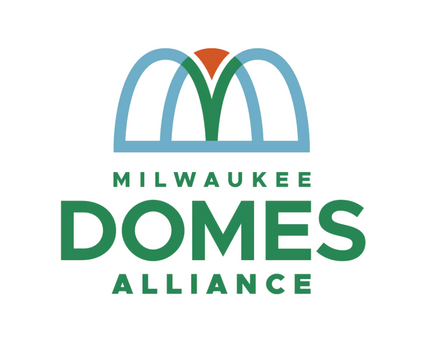
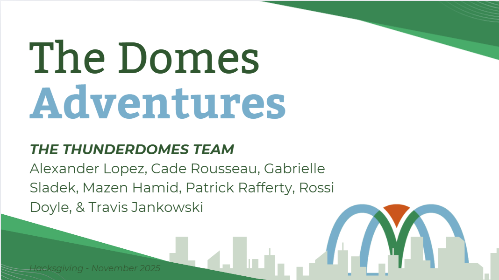
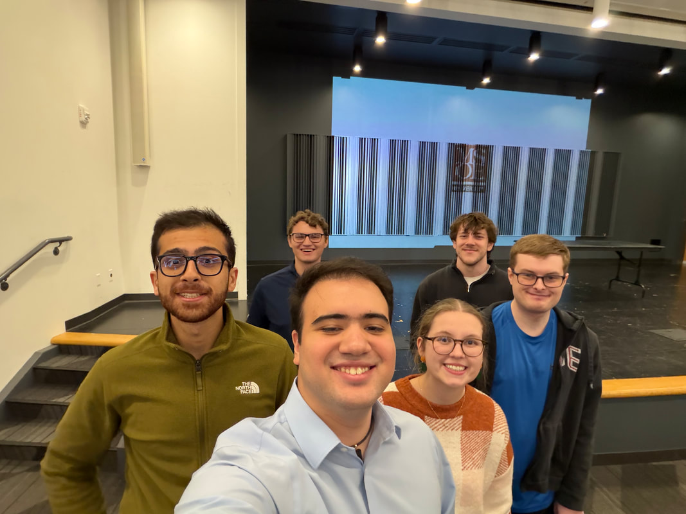
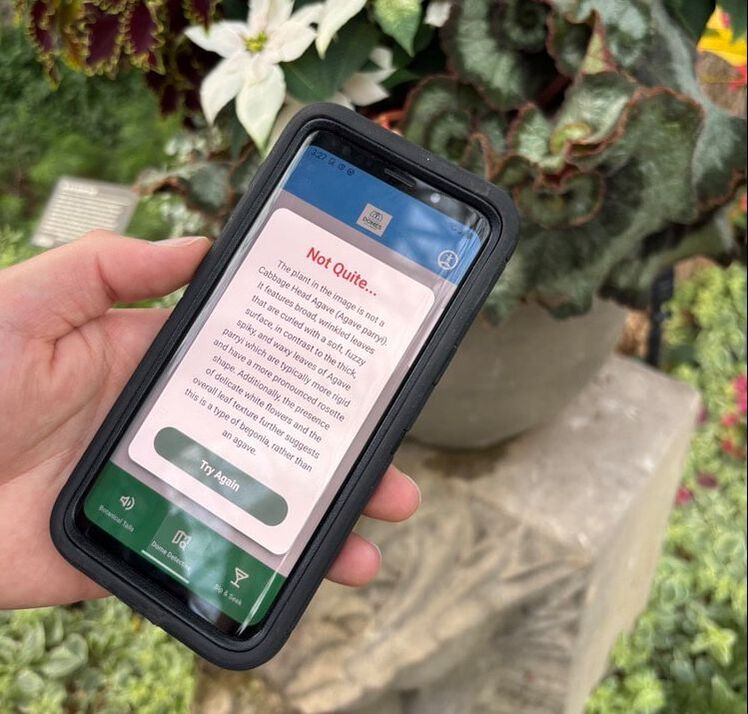

Milwaukee Domes · AI hackathon
Making a living museum feel alive.
An AI-powered companion designed to increase engagement and revenue at the Milwaukee Domes through playful, personalized discovery.


The challenge
Make every visit feel different.
Partnering with the Milwaukee School of Engineering Artificial Intelligence Club and Milwaukee Domes Alliance, my team explored how an AI-centric solution could increase user engagement and revenue.

The experience
Connected ways to explore.
We designed a set of connected experiences:
- Botanical Tales: a chatbot and voice assistant for learning about plants.
- Sip & Seek: a cafe purchase that unlocks an immersive plant tour.
- Dome Detectives: a photo-based scavenger hunt for families.

A different visit every time
Let each visit tell a new story.
Stories are AI-generated, so every visit can become a new adventure.